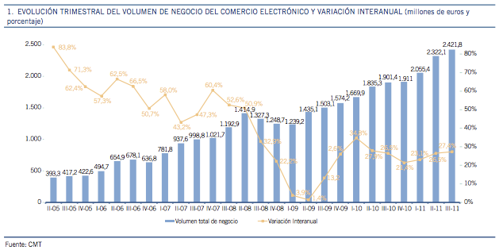

E-COMMERCE EN EL MUNDO
Durante los últimos años, el mundo del E-Commerce ha crecido rápidamente y la tendencia va en aumento. El Informe Forrester "Previsión de Ventas Online en Europa 2011 – 2016" predice que las ventas online al por menor se incrementarán en 17 principales mercados europeos, pasando de 97,706 millones de euros en 2011 a 171,957 millones de euros en 2016, con una tasa anual de crecimiento del 12.2%. El informe también ofrece información acerca de lo que mueve a los europeos a optar por la compra online. De entre las principales razones se incluyen el ahorro de tiempo, la posibilidad de encontrar las mejores ofertas y una mejor selección de productos y las ansias de estar al día. El estudio Forrester también desvela que la línea entre las tiendas físicas y las tiendas online se está desdibujando, con el 43% de los internautas europeos consultando en Internet antes de comprar en cualquier otro canal y con el 25% sirviéndose del conocimiento que adquieren offline para informar acerca de sus compras, como examinar o probar productos en tiendas antes de comprarlos por Internet.
El E-Commerce se ha expandido desde el consumo de bienes básicos y la electrónica hasta establecimientos de moda, farmacias y perfumerías. Al mismo tiempo, encontramos una gran variedad de nuevos servicios disponibles online como pueden ser las agencias de viajes, los sistemas de gobierno, la sanidad o la banca, por mencionar sólo algunos. Estamos siendo recientemente testigos del gran crecimiento de la compra grupal en Internet. La mayoría de las compañías de compra grupal, como por ejemplo Groupon, ofrecen principalmente cupones o descuentos para servicios como restaurantes, spas, cines, etc. sin tratar con bienes de consumo.